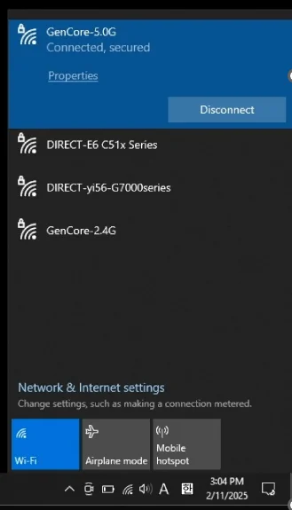
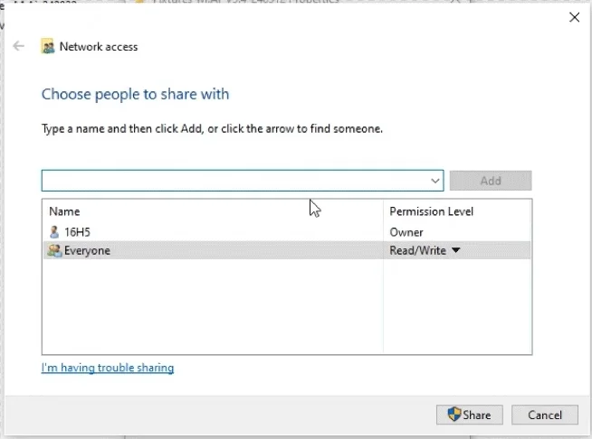
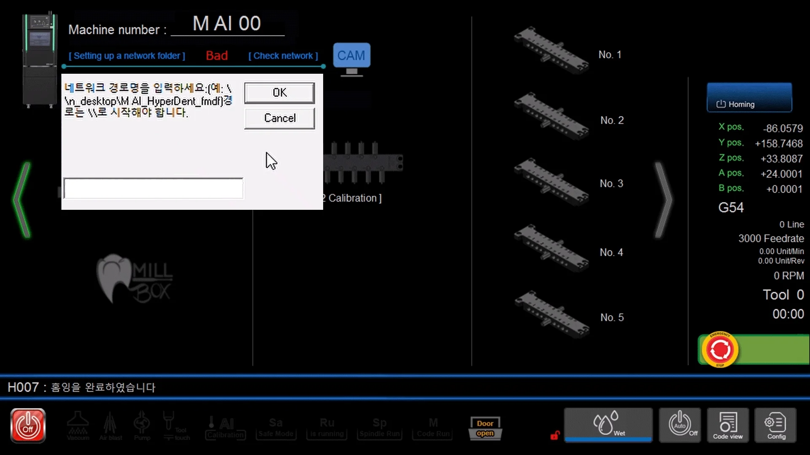

4.10. 폴더 공유
| 4_설치 & 기본조작 |
동일한 네트워크에 연결


고급 공유 설정
- 설정(Win + I)에서 “네트워크 및 인터넷” 페이지를 엽니다.
- Open “고급 네트워크 설정” \ “고급 공유 설정” 을 열어서 아래와 같이 설정합니다.


4.10.a. NC Output 폴더
- 설정한 NC Output 폴더에서 “Properties(속성)”을 선택합니다.

- “Sharing(공유)” 페이지에서 “Share..(공유..)” 버튼을 클릭하여 “네트워크 액서스” 창을 엽니다.

- “Everyone”을 추가하고, 사용 권한 수준을 “Read/Write(읽기/쓰기)”로 설정합니다.


- 마지막 페이지에 표시되는 네트워크 경로를 확인하여 두십시오.

- M AI° PC에서 해당 경로의 폴더를 찾습니다.


4.10.b. Fixture 폴더
- 설정한 Fixtures… 폴더에서 “Properties(속성)”을 선택합니다.

- “Sharing(공유)” 페이지에서 “Share..(공유..)” 버튼을 클릭하여 “네트워크 액서스” 창을 엽니다.

- 마지막 페이지에 표시되는 네트워크 경로를 염두하여 두십시오.

- “AI Premill calibration”을 실행합니다.

- “Setting up a network folder” 버튼이 화면 좌상단에 있습니다.

- 공유한 폴더의 경로를 입력하고, [OK]를 클릭합니다.


- [Check network] 버튼을 클릭하면, 정상적으로 연결되었는지 확인할 수 있습니다.


If the connection is good
- “Use Save AI Calibration Result File to Network Folder” 체크 박스를 체크하여 자동 저장 기능을 활성화 합니다.